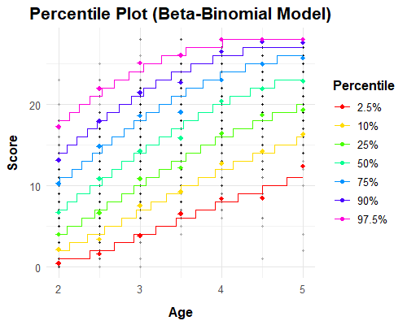

This application models norm scores such as percentiles, T scores, IQ scores or z scores for psychometric, biometric and other data, using parametric continuous norming. Rather than norming each age group separately, the full distribution of the raw score is modelled as a smooth function of age. This interpolates between age groups, stabilizes the estimates at the tails and reduces the sample size required for stable norms.
.rds file.At every age, the raw score is assumed to follow a probability distribution from a selected family (see below). The parameters of this distribution (e. g. location, scale, skewness) are not constant but are modelled as polynomial functions of age; the polynomial degree controls how flexibly each parameter may change with age. The coefficients are estimated by (optionally weighted) maximum likelihood from the whole sample at once, so that all observations inform the estimate at every age.
To obtain a norm score, the observed raw score is converted into its cumulative probability (percentile) under the distribution fitted for the person's age, and this percentile is transformed to the chosen norm scale. The procedure is continuous in age, so ages need not coincide with the age groups of the standardization sample.
age is
preselected automatically.fluency, raw or score are preselected
automatically; otherwise please check the selection. The permissible scale
depends on the family (see below).computeWeights() in the R package)..csv (comma-separated, with header row),
.xlsx/.xls (first sheet), .sav (SPSS) and
.rda (the first object in the file is used). An uploaded file overrides the
selected example, and loading new data resets the current model and tables.| Family | Typical data | Parameters (polynomial in age) |
|---|---|---|
| Sinh-Arcsinh (SHASH) | Continuous, unbounded scores; response times, difference scores, biometric data (e. g. BMI, height, weight). | μ (location), σ (scale), ε (skewness), δ (tail weight). Default degrees 3, 2, 2, 1. δ may alternatively be fixed to a constant (δ = 1 with ε = 0 corresponds to the normal distribution). |
| Beta-Binomial | Accuracy and power tests with a fixed number of items n (scores 0 to n), e. g. vocabulary or comprehension tests. Particularly appropriate for Rasch (1PL) scaled tests. | α and β (shape parameters). Default degrees 3 and 3. The norm table covers the entire range from 0 to n. |
| Conway-Maxwell-Poisson (CMP) new in cNORM 3.7 |
Speeded tests, rates and counts (non-negative integers), such as the number of items processed within a time limit; scores may have a ceiling. | μ (location) and ν (dispersion). Default degrees 3 and 2. ν = 1 is the Poisson distribution, ν < 1 indicates over-dispersion and ν > 1 under-dispersion, as is typical for speeded tests with bounded scores. |
?cnorm.betabinomial).The degree of a parameter determines how it may vary with age: degree 0 is constant, 1 is linear, 2 is quadratic and so on. Higher degrees capture more complex developmental trajectories but increase the risk of overfitting. Recommended strategy:
Norm scores can be expressed as T scores (M = 50, SD = 10), IQ scores (M = 100, SD = 15) or z scores (M = 0, SD = 1). Percentile ranks are included in the norm tables.
7, 8, 9, 10);
one table per age is created.Selecting an example automatically sets the matching distribution family.
| Data set | Description | Family |
|---|---|---|
| speed | Reading fluency, speeded word–picture matching task; ages 7–11, scores 0–75
(score variable fluency; the ceiling of 75 is set automatically). | CMP |
| elfe | Reading comprehension test; ages 6–10, scores 0–28. | Beta-Binomial |
| ppvt | Peabody Picture Vocabulary Test IV; ages 2.5–17.5, scores 0–228. | Beta-Binomial |
| CDC | Growth data of the CDC (BMI, weight, height); ages 2–18. | SHASH |
The app covers the core workflow. Additional options, such as automatic selection of
polynomial degrees (autoselect.shash(), autoselect.betabinomial())
and further diagnostics, are available in the R package. A downloaded model (.rds)
can be reloaded with readRDS() and used for further predictions.
library(cNORM)
model <- cnorm.cmp(age = speed$age, score = speed$fluency,
mu_degree = 3, nu_degree = 2, max_score = 75)
summary(model, age = speed$age, score = speed$fluency)
tables <- normTable.cmp(model, ages = c(8, 9, 10), start = 0, end = 75)
vignette("BetaBinomial", package = "cNORM")
Further information: Psychometrica
and the package vignettes on CRAN.
The package can also be launched locally with cNORM.GUI().
When launched locally, all data stays on your computer. The online application is hosted on ISO 27001-certified IONOS servers located in the European Union (Frankfurt, Germany), in compliance with the General Data Protection Regulation (GDPR). cNORM does not store uploaded data; nothing you upload is retained.
Please cite the package (see citation("cNORM")) and the methodological papers
relevant to your analysis.